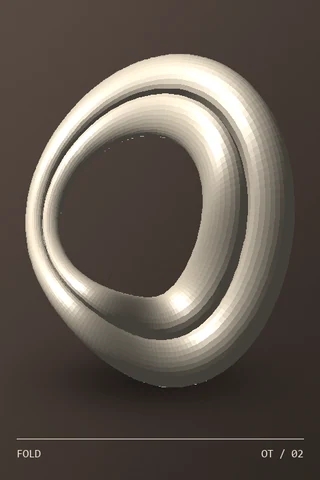
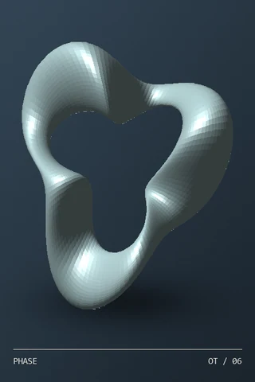
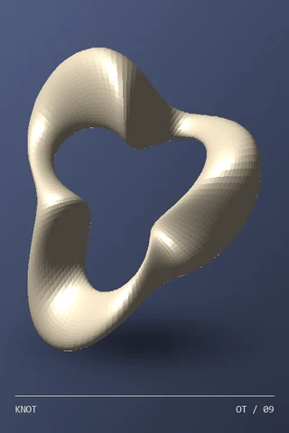

OUT
THERE










- Web design & build
- SEO & growth
- AI & creative pipelines
Based in India · 10:30:00 IST
Taking on select projects
who will build it
Two founders building websites, SEO growth engines, and AI-powered creative pipelines—for teams who would rather stand out than blend in.
MORE
MEDIADigital agency
TECH.
VADSOFTProduct platform
PIPELINESCreative automation
VANDANA TRAVELS — CLIENT · LIVE
OUT THERE
Every project leaves with one signature moment—a detail that moves, responds and belongs to nobody else.
Five moves,
no surprises
Focused from first conversation to final launch. You see something real early—not a presentation about a presentation.
QUESTION
We sit with the business, audience and constraints until the real problem becomes clear.
- Stakeholder conversations
- Experience audit
- Success definition
FRAME
One strong strategy, multiple visual territories and a decision before detailed screens begin.
- Content architecture
- Creative territories
- Interaction direction
DESIGN
Type, colour, motion and interface are shaped together as one coherent system.
- Responsive design
- Motion language
- Working prototype
BUILD
Engineering runs alongside design with real content, real devices and real performance targets.
- Front-end development
- Responsive QA
- Launch support
EVOLVE
We tune the experience against real devices, feedback and observed behavior.
- Visual refinement
- Accessibility checks
- Performance review
Two founders.
No account layer.
One of us designs, develops, animates and builds automation pipelines; the other leads client partnerships and SEO. You talk directly to the people shipping your work.
Design & build
UI/UX · Front-end · Motion & 3D
SEO & growth
Search visibility · Client strategy
AI & pipelines
AI video · PDF templates · Automation
Three ways in
Clear scope, direct founders, and zero middlemen—whether you need a site, SEO growth, or an automated content pipeline.
Website + SEO
Custom web design, fast build, and search visibility from day one.
- UX & visual design
- Responsive development
- Technical & on-page SEO
- Analytics & launch
Full studio build
End-to-end site, motion/3D polish, SEO growth, and launch support.
- Complete brand & UI system
- Custom motion & WebGL
- SEO growth architecture
- Post-launch refinement
AI & creative pipeline
Automated workflows for AI video, PDF templates, and media editing.
- AI video generation pipelines
- Dynamic PDF template systems
- Image & video editing
- Custom workflow automation
Before you
write in
Still unclear? Ask directly—we’ll tell you honestly whether we are the right studio.
01What does Out There actually build?
Custom websites, high-ranking SEO foundations, and automated creative pipelines—including AI video generation, dynamic PDF template workflows, and image/video editing.
02Who works on my project?
Both founders directly: one handles design, front-end development, motion and automation; the other handles client strategy and SEO. There is no account layer.
03Can you build AI video or PDF automation pipelines?
Yes. Beyond websites, we design end-to-end pipelines for AI video creation, automated PDF/document generation, creative media editing, and repetitive business workflows.
04Can we see live client work first?
Yes—scroll to Selected Work above to inspect live websites we shipped for Shree Vandana Tours & Travels, Vadsoft, Build by Vadsoft, Inovexa, and Two Dots Media.
LET’S BUILD IT!
We’ll make it concrete.
Speak to the founders,
not a contact form